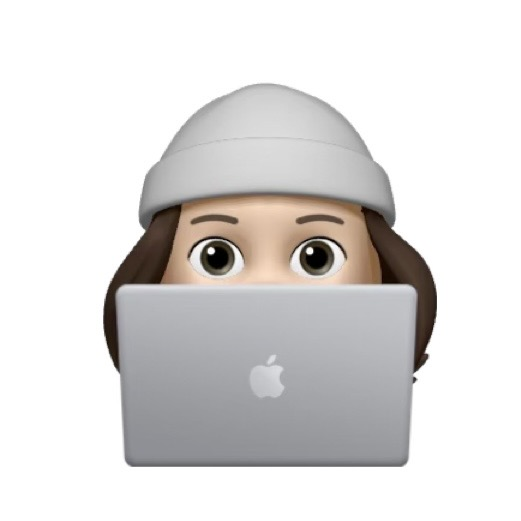

Four years at Alibaba and ByteDance, now studying Interaction Design at UTS. I care about the seam where AI meets human habit — the tiny moments where a tool starts to feel like a hand you can trust.

Everything I'd pull down and talk you through in an interview, and a few things I wouldn't — left up because they taught me something. Pull the loupe if you want to look closer.
I grew up between Hangzhou and Shanghai, cut my teeth on consumer scale at Alibaba and ByteDance, and now I'm back at a desk at UTS trying to figure out what design means when the cheapest part of the pipeline is writing.
I like work that holds its shape after you stop looking at it — the kind of craft that shows up in a spreadsheet, a service map, a signage system, a ten-second onboarding. I treat every brief as an invitation to a conversation with a real person on the other side.
p.s. this site is a studio — not a showreel. poke around, click the lamp, try the loupe.